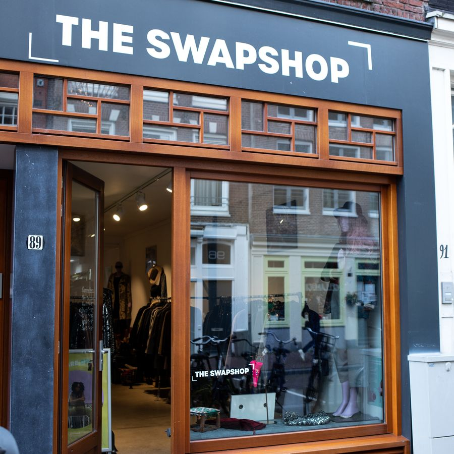
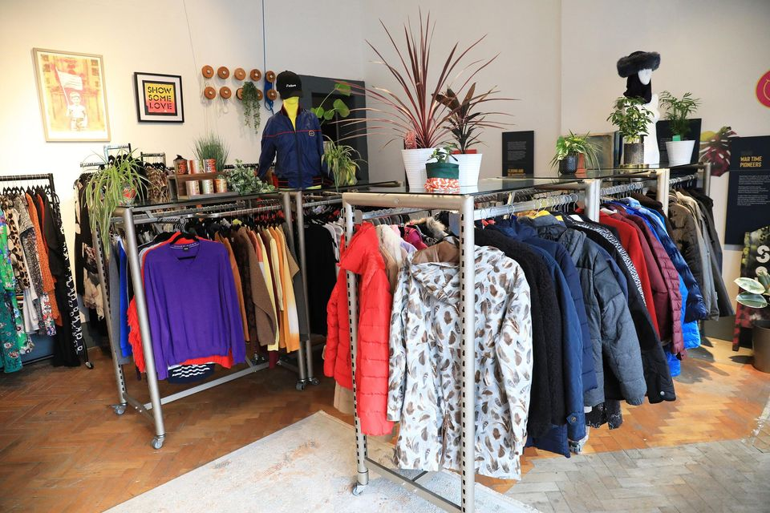
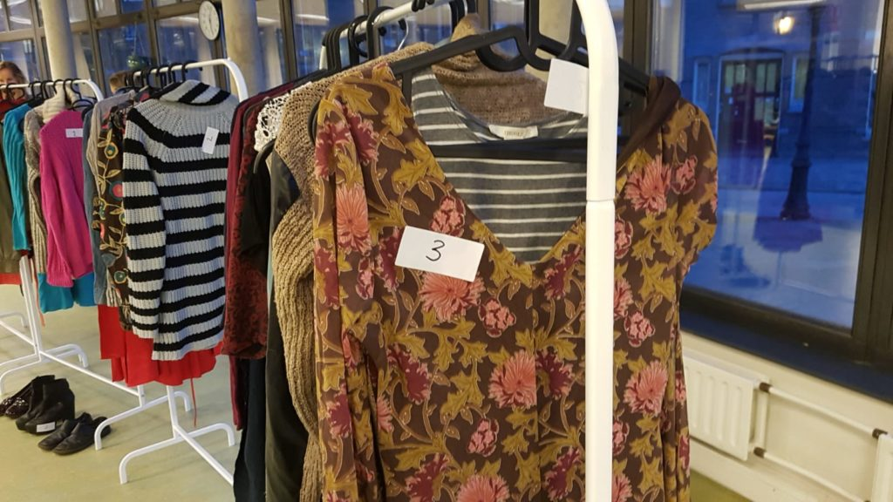
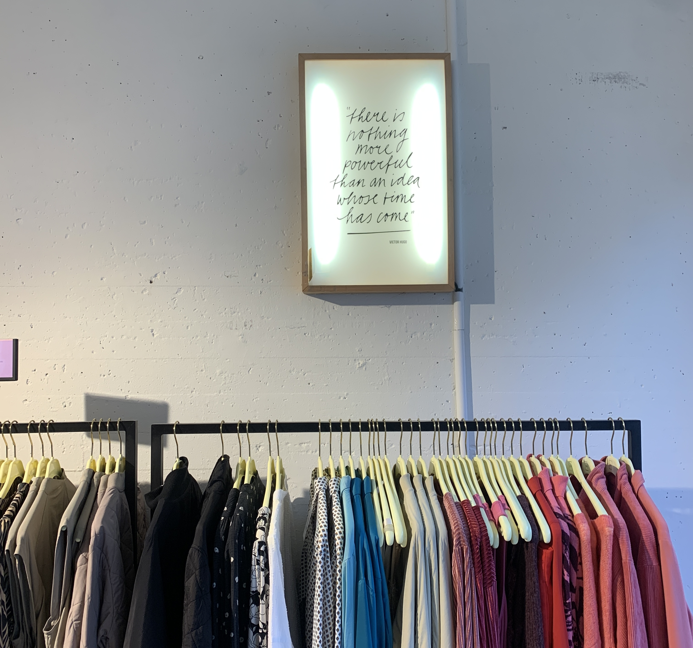

5 Kledingbibliotheken in Amsterdam
Kledingruil initiatieven bij jou om de hoek!
U zult zich nu wel afvragen: "Maar waar zijn zulke kledingbibliotheken te vinden?" Geen zorgen! Wij hebben speciaal een lijstje gemaakt met vijf ontzettend leuke kledingruil initiatieven in Amsterdam.

LENA The Fashion Library
De eerste winkel op ons lijstje is LENA: The fashion Library. Een charmant boetiekje in het hart van de Jordaan. Hier draait alles om meer dan alleen kleding; je kan hier namelijk meer dan alleen lenen.... Ze bieden namelijk ook de mogelijkheid om kleding te ruilen én te kopen! In dit knusse winkeltje vind je zorgvuldig geselecteerde kledingstukken die wachten om een nieuw avontuur met je aan te gaan. Of je nu op zoek bent naar een uniek vintage item, een trendy outfit of gewoon wat nieuwe inspiratie, bij LENA zal je het vast vinden. LENA heeft een erg breed aanbod qua merken, van elegant naar stoer, van casual naar luxe. In de winkel staan veel verschillende bordjes waarop de stijl van de kleding staan en voor welke gelegenheid je het kunt dragen. Ontzettend leuk dus!
The Swapshop
In 2018 opgericht, onder de naam "Awearness Kollektif". Vriendinnen Laura en Monique wilden iets doen aan de overconsumptie en de enorme verspilling in de kledingindustrie. Zij zagen kleding ruilen als een simpele en vooral hele leuke en leuke oplossing. The SwapShop staat momenteel helemaal in bloei, terwijl ze zich helemaal focussen op kledingruil, en het redden van deze overconsumptie cultuur. Het concept is eenvoudig maar geweldig: in plaats van geld uit te geven, ruil je kledingstukken die je niet meer draagt voor iets nieuws om te koesteren. Het is een cyclus van geven en ontvangen, waarbij elke ruil een nieuw hoofdstuk toevoegt aan de levensloop van kledingstukken. Wat The SwapShop zo bijzonder maakt, is de diversiteit van hun aanbod. Hier vind je vintage schatten naast moderne must-haves, en elk stuk heeft zijn eigen unieke charme. Of je nu op zoek bent naar een tijdloze jurk, een kleurrijke trui of een funky accessoire, de kans is groot dat je het hier vindt, en dat alles zonder een cent uit te geven.
3. SWOPS ClothesSwap
Dus als je op zoek bent naar een unieke winkelervaring die mode, duurzaamheid en gemeenschap combineert, zoek dan niet verder dan SWOPS Clothesswap. Stap binnen, laat je inspireren en ruil je weg naar een meer stijlvolle en bewuste toekomst. SWOPS bevindt zich
De WasStraat
Laura Dolls zit aan de Wolvenstraat 7 in Amsterdam. Hier verkopen ze mooie vintage spullen en bijzondere accessoires. Als je opzoek bent naar feestkleding is dit ook het perfecte adres daarvoor, want ze hebben een ruime collectie aan feestkleding. Ze verkopen veel jaren 50 tot 70 kleding voor een redelijke prijs.
Pasar Guci
Deze winkel bevindt zich in Amsterdam langs de Albert Cuypstraat 100. Er is heel veel keus, maar de prijs per kilo is wel wat aan de duurdere kant. De vintage kleding winkel ligt ook mooi in de buurt van de Albert Cuyp markt. Alle kleding is ook goed gesorteerd voor een betere shopervaring.
De artikelen zijn hier op een kleursticker gecodeerd en niet met een prijskaartje en de prijs wordt bepaald per kilo en hoeveel het item waard is.